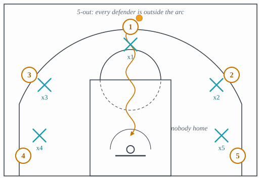
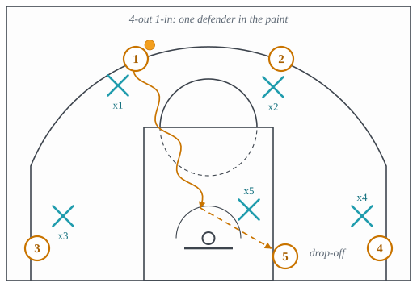
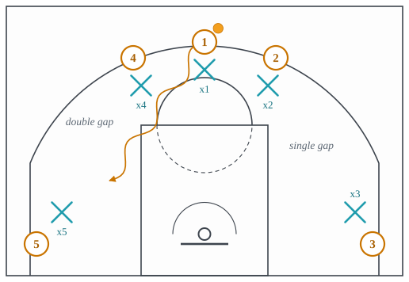
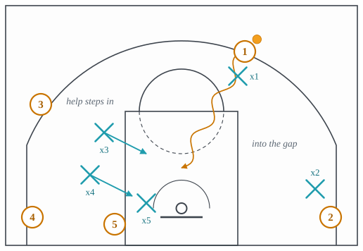
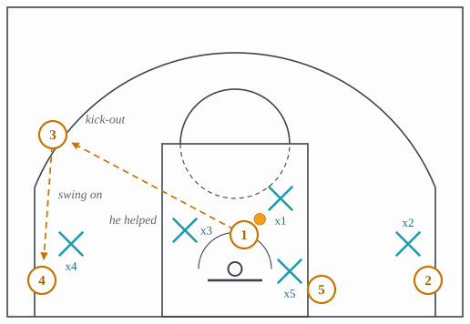
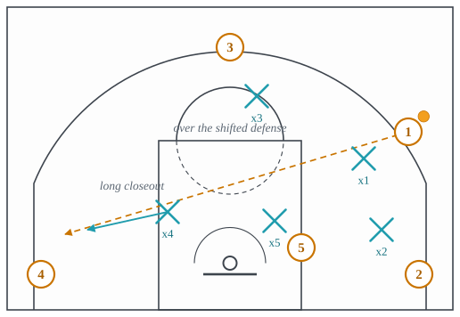

3.10: Spacing and Roles
Chapter 3: Offense
Eight lectures of actions have taken the floor for granted. This one is about the floor. Every action so far works only if the players who are not in it are standing in the right places, and “the right places” has a precise meaning: far enough apart that one defender cannot guard two of them. That is spacing, and it is the quietest thing in basketball and the one that decides most possessions.
The lecture is mostly vocabulary, because a viewer needs the names of the spots before the rest of the site’s sentences mean anything. Section 1 names the floor: the areas and the spots. Section 2 is the alignments, 5-out and 4-out 1-in, and what each buys. Section 3 is the gap, the single measurement that explains why spacing matters. Section 4 is the three things that happen when spacing works: the drive, the kick-out and the skip pass. Section 5 is the five roles as they are actually played now.
1 The floor
Split the court lengthwise, basket to basket, and the half the ball is on is the strong side; the other is the weak side, which on defense is where help comes from. That is the first division every player learns, and half the defensive vocabulary of Chapter 4 refers to it.
The painted rectangle from the baseline to the free-throw line is the paint, also called the key or the lane. Inside it, against the rim, is the restricted area, the half-circle inside which a secondary defender cannot draw a charge. The painted marks on the lane lines nearest the baseline are the blocks, and the traditional post-up spot is on one of them. Where the free-throw line meets a lane line is an elbow, the hub of high-post play and the spot the two bigs stand on in Horns. The middle of the free-throw line is the nail, which is a defensive spot: it is where a help defender stands to threaten a drive from either side, taught in lecture 4.4.
Outside the arc, going round from the baseline: the corner, where the three-point line meets the sideline and the shot is shortest; the wing, level with the free-throw line extended; the slot, above the arc roughly in line with the lane line; and the top of the key, straight out from the rim. Between the corner and the block, just outside the lane, is the dunker spot, where a non-shooting big waits for lobs and drop-offs, and where the hammer of lecture 3.6 sends its screener.
2 The alignments
A team’s alignment is how many players stand outside the arc. 5-out puts all five outside it, as in Figure 1, and the paint is empty: any drive meets nobody until a defender leaves his man. It is the base of the delay offense of lecture 3.2 and of most modern motion. It asks one thing of a roster, which is that all five players can be guarded outside the arc; a non-shooting big standing at the arc is guarded by a defender who simply stands in the lane, which turns 5-out into 4-out with an extra defender in the paint.

4-out 1-in puts four outside and one inside, usually in the dunker spot rather than on the block, as in Figure 2. It concedes one defender in the paint and gains a drop-off target and an offensive rebounder. Which alignment a team uses is a roster decision in the same way the systems of lecture 3.9 are.

3 The gap
A gap is the distance between two attackers on the perimeter, measured in spots. If they are in neighboring spots, slot and wing, that is a single gap. If the spot between them is empty, slot and corner with the wing vacant, that is a double gap, as in Figure 3. The difference decides whether a drive is worth attempting: driving a single gap means the second defender is one step away, and driving a double gap means he is two, which is the difference between help arriving before the driver and after him.

This is what spacing means, operationally. It is not “stand far apart”; it is “stand so that the gaps the ball can attack are double, and so that no defender can guard two attackers at once.” Every offense in this chapter creates double gaps somewhere. Dribble drive motion is built on nothing else.
4 Drive, kick-out, skip
Three things happen when the spacing is right, and they follow one another.
The drive is the ball-handler beating his man into the gap, as in Figure 4. A drive is not primarily a way to score; it is a way to make two defenders guard one player, which is the same thing a ball screen does, achieved without a screen. Once the second defender commits, the driver is no longer looking at the rim, he is looking at the man that defender left.

The kick-out is the pass to that man, as in Figure 5. It is the most common assist in the modern game, because the modern floor puts a shooter in each corner and the modern defense sends help from one of them.

The skip pass is the longer version, thrown across the floor over the defense rather than around it, as in Figure 6. It skips the players in between, which is where the name comes from, and it is thrown when the whole defense has shifted to one side: the recovery is then a closeout from the middle of the paint to the far corner, which is the longest closeout in the game and the one that produces the most open shots.

- Setup
- A handler with a live dribble facing a double gap, two shooters spaced on the weak side, and either an empty paint or a big in the dunker spot.
- Trigger
- The handler’s defender is beaten or leaning, and the gap is two spots wide.
- Read
- The driver reads the second defender, not the rim. Nobody helps: finish. The nail defender steps across: the shooter behind him is open at the top or the far slot. The low man helps at the rim: the corner he left is open. The big’s defender leaves the dunker spot: the drop-off. If the defense recovers before the pass, the ball is swung on and the next player attacks the gap that has opened.
- Payoff
- A layup, or the open shot belonging to whichever defender chose to help.
- Beaten by
- Guarding the drive with one defender, which needs a player who can stay in front; a stunt that fakes help and recovers; or building a wall in the middle and conceding the pull-up. All in lecture 4.4.
5 The five roles
The numbers are still used, and still mean something, but what each number does has changed enough that the old definitions mislead.
The point guard, the 1, is the primary ball-handler and initiator. The shooting guard, the 2, is the secondary handler and perimeter scorer, today mostly an off-ball mover who comes off the screens of lectures 3.5 and 3.6. The small forward, the 3, is the wing, expected to shoot, drive and guard several positions. The power forward, the 4, was the second post player and is now often a perimeter player who screens, pops and makes the short-roll decisions of lecture 3.3; when he shoots from the arc he is called a stretch four. The center, the 5, is the primary screener, roller and rim protector.
Two role names exist because the numbers stopped fitting. A combo guard moves between initiating and spacing without a fixed role. A point forward is a forward-sized player who runs the offense, which puts a bigger, slower defender at the point of attack and is a mismatch before anything has happened.
The reason the roles matter for this chapter is that every system in lecture 3.9 is chosen for the players on the roster, and every action in lectures 3.2 to 3.8 is run for a particular kind of player. A ball screen for a point forward is a different action from a ball screen for a point guard, even though the diagram is identical.
The idea to carry into lecture 3.11 is that spacing, gaps and roles are the raw material of an offense that has no script at all. The next lecture is about those: motion, read and react, isolation and the mismatch, and how an offense chooses the action that beats the coverage it is being shown.